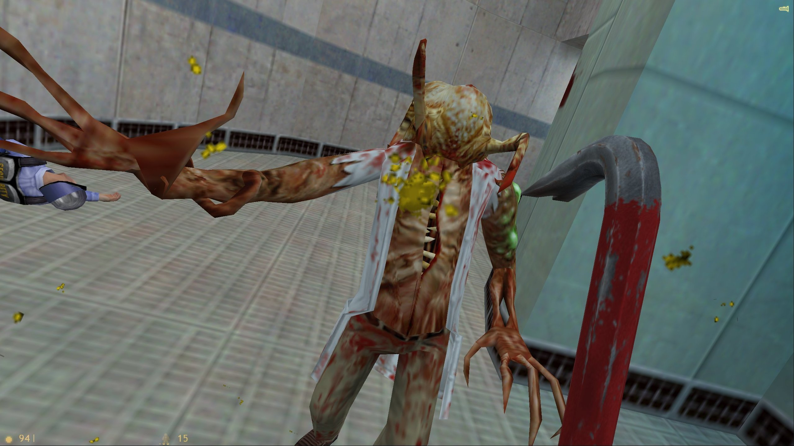
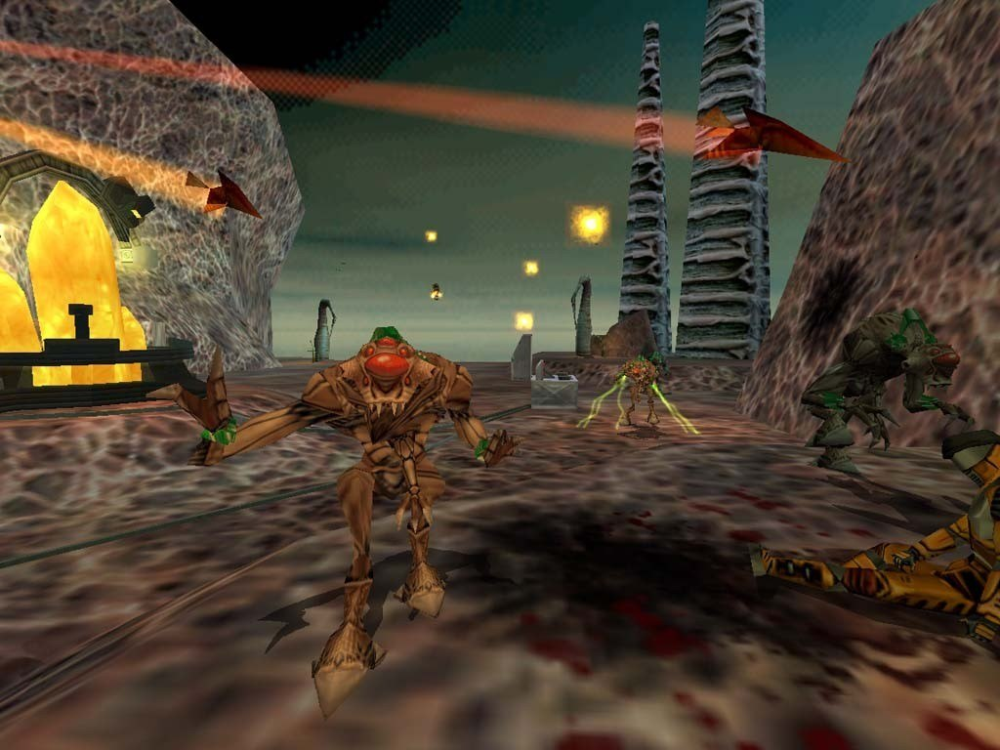

Half-Life utilizes a combination of in-game events, non-player characters and subtle guidance to fully immerse the player. Most of the game takes place in Black Mesa, a large-scale research facility, and as such many of the rooms you encounter are science laboratories. These are the types of labs you expect from a sci-fi film, they have grey walls, large confusing control panels, and dangerous looking machines. Most important to the labs, however, are the scientists and guards (or Barnies). Although the player character (Gordon Freeman) can’t talk himself, the interactions you have with NPCs make you feel like a person in the game’s world. This is in stark contrast to earlier FPS games like DOOM and Quake, where you are essentially a nameless entity who exists solely to kill baddies.
Having convincing NPCs allows the developers to tell an interesting story which the player feels a part of. When games use text exposition, it can feel like the story has already happened, or it can only happen between text blobs. Half-Life’s in-game dialogue allows the player to interact with the world while learning more about the story. This dialogue often appears alongside in-game events, rather than cutscenes. The player can still interact with the world while major plot events happen, and as such they don’t get removed from the world whenever the game feels it needs to tell them something.

Although Half-Life does have a tutorial, a lot of the game’s mechanics are taught to you through play, and it’s arguable that the tutorial is unnecessary. For example, the tram ride at the start familiarizes the player with movement and looking. While these concepts may seem obvious to players today, and the ride a nuisance, for many people Half-Life would be their first FPS, and thus it was important to make certain that they thoroughly grasped these concepts before proceeding. You also can learn a lot from NPCs. For example, near the start of the game, you’ll see a dying security guard reaching for a health station, collapsing just before he can get to it. A player may see this and assume the health station can heal them, or just be intrigued as to why the security guard was reaching for it, and thus attempt to interact with it themselves. Another time you learn from an NPC is when you watch a scientist run out from behind a corner to get gunned down by a turret. From watching this the player can easily pick up “There’s some sort of turret nearby, and it’s dangerous to me.” These tutorials are non-invasive, allowing the player to learn without explicitly teaching them.
Half-Life’s usage of NPCs was revolutionary, and in conjunction with the game’s non-invasive tutorials, in-game events, and first-person perspective, created a convincing environment in which the player can easily find themselves lost.